Modelica Newsletter 2012-1
Newsletter #1 of 2012 (News from Modelica Association, from Modelica related projects and from Modelica tool vendors)
Table of Contents
- Letter from the Board
- Modelica Association News
- Educational News
- Classes for Modelica
- Claytex Dymola and Modelica Training Schedule
- Modelon offers regular training in Europe and USA
- MODPROD'2012 Workshop
- Modelica Course using OpenModelica
- OpenModelica'2012 Workshop
- Project News
- Library News
- Optimization 2.0
- FlexibleBodies 2.0
- PowerTrain 2.1
- Buildings 1.0
- Driveline Library Guided by Leading Transmission Manufacturers
- TILMedia Suite - Thermo-Physical Fluid Properties
- Vehicle Dynamics Library 1.6
- Vendor News
Letter from the Board
Dear Modelica interested,
Starting in 2012 the Modelica Association (MA) will expand beyond the development of the Modelica language and Modelica libraries and broaden its operations to include coordinated standardization in the fields of cyber-physical systems and systems engineering. To achieve this, the working process of the Modelica Association is being changed and long term development activities will soon be organized into MA Projects (MAPs).
MA Projects will be organized as follows. Each MAP will be free to define their own operational rules (voting, membership, meetings, etc). Each new MAP and their operational rules will need to be approved by the MA in order to ensure that the project operates according to the principles of the MA. While the leader of a MAP must be a MA member, other project members need not to be MA members. To comply with the spirit of the MA, MAP results must be made available under an open source license. As in the past, short term development activities can be organized in less formal MA Task Forces.
This new process requires a change to the bylaws that was worked out by a working group headed by Andreas Uhlig (ITI) last year. According to the current bylaws, any change to the bylaws must follow a strict process involving two separate votes at two separate meeting. The first voting for these bylaw changes took place in December 2011. The second and final voting will take place at end of Feburary 2012.
As a first step to utilize this new freedom, the development of the Functional Mockup Interface (FMI), previously performed by the MODELISAR project (which ended in 2011), will be continued as an MA Project. The MODELISAR partners have already agreed to this change, setup project rules and elected Torsten Blochwitz from ITI as project leader. The MA expects that this will be an important long term development. In order to not confuse non-Modelica users and tool vendors, the project web page will remain in a neutral, FMI specific form, since this standard is independent of Modelica. Of course, as in the past, the Modelica Association will work on "coordinated standardization" so that every Modelica model can be exported in FMI format and every FMI model can be imported in to a Modelica model.
Additionally, Ingrid Bausch-Gall from BAUSCH-GALL GmbH and Andreas Pfeiffer from DLR have started an initiative to standardize a binary file format based on HDF5 to store and to retrieve efficiently small and large time series data typically generated by simulations, hardware-in-the-loop simulations, optimizations, frequency analysis, measurements. Data values can be of any supported HDF5 type, like 32 or 64 bit floating point numbers, 8, 16, 32, 64 bit signed or unsigned integers, or strings, and can be associated with different time axes, e.g., for different sample times. File sizes up to tera bytes are supported. Additional information to the time series data can be stored, in particular all relevant elements and attributes of the FMI standard such as units, quantities, description texts of the variables, but also the setup of the performed experiment. This development is currently organized in form of a Modelica task force.
If you are interested to work on a new standard in the fields of cyber-physical systems and systems engineering under the banner of the Modelica Association and utilizing its know-how and its web/svn/trac infrastructure, please contact the MA board.
If you have interesting news for the Modelica community, please contact the newsletter editor (Michael Tiller) for information on how to submit newsletter articles for possible inclusion in the next newsletter. The deadline for articles for the next newsletter is May 14, 2012.
Best wishes from the Board of the Modelica Association:
Martin Otter, Chairman (DLR Germany)
Peter Fritzson, Vice-Chairman (Linköping University, Sweden)
Michael Tiller, Secretary (Dassault Systèmes, France)
Hilding Elmqvist, Treasurer (Dassault Systèmes, Sweden)
Modelica Association News
Modelica'2012

The Modelica Association announces the 9th International Modelica Conference to be held in Munich from September 3 to 5 in 2012. It is organized together with the Robotics and Mechatronics Center of the German Aerospace Center (DLR).
The Modelica Conference is the main event for users, library developers, tool vendors, and language designers to share their knowledge and learn about the latest scientific and industrial progress related to Modelica and the Functional Mock-up Interface (FMI). The conference features several Modelica tutorials for beginners and advanced users, as well as vendor presentations, and an exhibition. The last Modelica conference in 2011 was visited by 325 participants from 23 countries, and we expect a similar size at this conference.
Call for Papers
Are you interested in submitting a scientific paper? Do you want to apply for the Modelica free library award? Will your product impress everyone at the vendor exhibition? In any case, visit the call-for-papers page and inform yourself about how you can contribute to the conference: www.modelica.org/events/modelica2012/call-for-papers
Below you find the most important dates of the conference:
| May 13 | Submission of papers, libraries, tutorials, vendor presentations, exhibitor applications |
| June 4 | Notification of acceptance of submitted item |
| July 1 | End of early registration |
| July 15 | Submission of final papers and libraries |
About the Conference Venue
The conference is located at the Veranstaltungsforum Fürstenfeld in Fürstenfeldbruck near Munich. This venue was built as annex to an ancient monastery but is modern equipped. Spacious halls enable four parallel sessions and a former barn creates a cozy atmosphere for the associated social events.
Munich is a city with plenty of attractions. You may taste the Bavarian beer in the English Garden or visit BMW World near the Olympiapark. Fürstenfeldbruck itself is located in the "Fünfseenland" where five beautiful lakes offer a wonderful area for recreation close to nature.
For more information about travel and accommodation, please visit the corresponding website: www.modelica.org/events/modelica2012/location-travel-accomodation
This article is provided by Dirk Zimmer (DLR-RM) and Martin Otter (DLR-RM)
Educational News
Classes for Modelica
BAUSCH-GALL GmbH offers the following training classes in German language either in our office or at your site:
- Next 2-day training course modeling and simulation with Modelica and Dymola held by Martin Otter in our office on April 23rd and 24th 2012
- Next 2-day introduction to Dymola and Modelica in our office on June 18th-19th 2012
- Next 1-day Usage of SimulationX in our office on March 27th, 2012
- Next 1-day Modelica and SimulationX in our office on March 28th, 2012
Information about training courses of BAUSCH-GALL GmbH. All classes are also offered at your location. Please ask for conditions.
This article is provided by Ingrid Bausch-Gall (BAUSCH-GALL GmbH)
Claytex Dymola and Modelica Training Schedule
Claytex are organising the following training courses to be held at our offices in the UK.
- 10-11 April - Introduction to Dymola and Modelica
- 12 April - Advanced Modelica
- 12-13 June - Introduction to Dymola and Modelica
- 14 June - Advanced Modelica
- 14-15 August - Introduction to Dymola and Modelica
- 16 August - Advanced Modelica
- 16-17 October - Introduction to Dymola and Modelica
- 18 October - Advanced Modelica
For more details on these courses, and also the Vehicle Dynamics course please follow: http://www.claytex.com/engineering-services/training/. We can also deliver these courses at your site if required.
This is provisional calendar and subject to change, please contact chris.denly@claytex.com to confirm dates and availability.
This article is provided by Mike Dempsey (Claytex Services Limited)
Modelon offers regular training in Europe and USA
Modelon offers regular Dymola training as well as Modelica and library/domain specific training. We are expanding our offer and will now offer training in USA on regular basis. Upcoming training sessions are:
- March 12-16, Munich, Germany: Dymola Introduction Course
- April 23-27, Ann Arbor, MI: Dymola Introduction Course
- May 7-11, Lund, Sweden: Modelica Introduction Course, Dymola Introduction Course, Mechanics Modeling, Thermo-fluid Modeling, Vehicle Dynamics Library Introduction, Air Conditioning Library Introduction, Hydraulics Library Introduction, Pneumatics Library Introduction.
- June 11-15, Munich, Germany: Dymola Introduction
This article is provided by Johan Andreasson (Modelon AB)
MODPROD'2012 Workshop

The 6th international MODPROD Workshop on Model-Based Product Development, organized by the MODPROD competence center at Linköping University, was successfully held at Linköping University, Linköping, Sweden, February 7-8, 2012. The workshop was attended by 103 people from industry and academia. Five tutorials were held in the morning the first day.
The first day keynote was by Roger Germundsson: "Mathematica and System Modeler in Product Design", followed by research and application presentations. In the evening a much appreciated workshop dinner was served among the airplanes in the Swedish Air Force Museum in Linköping.
The second day started by keynote presentations by Edward Lee: "Heterogeneous Actor Models", and by John Baras: "COMPASS: Component-based Architectures for Systems Synthesis".
In total 28 research and industry presentations
were held on modeling and system development technology and applications,
both hardware and software modeling, and combined. The workshop ended
with an interesting panel discussion on"Model interoperability - Technology Trends and Needs".
The program and the presentations are
available from www.modprod.liu.se .
This article is provided by Peter Fritzson (Linköping University)
Modelica Course using OpenModelica
A six day Modelica course using OpenModelica will be organized in September 2012 at Linköping University, Sweden. The focus is on learning the Modelica language, basic modeling techniques, and creating libraries. Short introductions will also be given to symbolic model transformations with MetaModelica, multi-core simulation of Modelica models, and model-based optimization with OMOptim.
Contact Peter Fritzson (peter.fritzson@liu.se) if you are interested in attending.
Participants from both industry and academia are welcome. The course will be given in English,
and will be organized in a concentrated way to facilitate traveling.
Attendance is free of charge for members of the Open Source Modelica Consortium.
This article is provided by Peter Fritzson (Linköping University)
OpenModelica'2012 Workshop
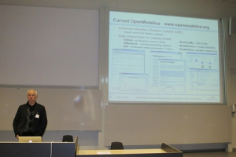
The 4th OpenModelica Annual Workshop, organized by the Open Source Modelica Consortium was held successfully in Linköping, Sweden, on February 6, 2012. The workshop was attended by 47 people from industry and academia.
New results and applications regarding the OpenModelica platform were presented,
including parallel simulation, model-based optimization, debugging, symbolic Jacobians, and initialization.
The program and the 15 presentations are available from www.openmodelica.org.
www.openmodelica.org .
This article is provided by Peter Fritzson (Linköping University)
Project News
Modelisar Project Achievements
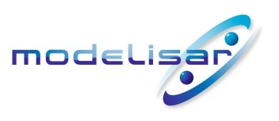
The Modelisar project [July 2008 - December 2011] was delivered with a very successful project review held on December 1st on the DS Campus in Vélizy - France, with 78 participants, 44 from the consortium. These final results impressed the ITEA 2 Office (EUREKA cluster program) and the Public Authorities reviewers who mentioned a very positive evaluation on the outcomes and future perspectives.
The Modelisar project core objective was the FMI (Functional Mockup Interface) innovation.
Major Results
Thanks to a large, constructive and cooperative consortium the project was able to deliver about 190 results, including:
- The open Functional Mockup Specifications (FMI), addressing Model Exchange, Co-Simulation, and PLM (see http://functional-mockup-interface.org for download of the published specifications). Fundamentally, the FMI innovation enables the run-time interoperability of system configurations composed of both behavioral models and embedded controller software components. Although many of the results involved Modelica and AUTOSAR technologies, it was also possible to leverage a variety of tools, since the FMI specifications are modeling language independent.
- For the support of the FMI specifications, 10 technical studies have been produced, with topics including advanced co-simulation techniques, potential Modelica enhancements, FMI integration with AUTOSAR, timing techniques, and so on.
- More than 10 FMI prototypes (for Model Exchange, Co-simulation, PLM) have supported the industrial use cases. In fact, Modelisar partners went beyond the expected prototyping objectives (see below).
- 24 scenario based demonstrations have proven the industrial relevance and strong added value of the FMI innovation. These addressed automotive engineering activities (e.g., gearbox management, electric power drive, climate control, chassis simulation, thermal simulation, circuit board development), code generation and testing, and finally PLM (Product Life Cycle Management) oriented project management for modeling and simulation to embedded SW in ECUs.
- In addition, several enhancement proposals for the Modelica language involving FMI and AUTOSAR have been produced.
An early and large adoption of FMI
Thanks to an early and large adoption of FMI, implementations were completed in many different authoring tools for modeling, simulation, code generation, testing and simulation data management. More than 34 tools from 20 companies are (or have plans to be) FMI compatible; among these 25 tools are already available, with a rich and varied FMI distribution list:
- 8 Modelica environments
- 3 Multibody and Vehicle environments
- 2 3D simulation and Fluid environments
- 9 Co-simulation environments
- And others for AUTOSAR design, cryptographic based co-simulation etc…
The Future of FMI Innovation
Now that the Modelisar project has been delivered, further FMI innovation will be continued as a long term project for enhancements, dissemination, and process to standardization. This future work should start from 2012 March within a Modelica association project (MAP) and will benefit from:
- support of Modelica association for the lean and efficient working process
- autonomy of the FMI group from the Modelica language, for the roadmap and content
- dissemination in other domains : Aerospace, Railways, Energy …
Conclusion
The Functional Mockup Interface (FMI), initiated as part of the Modelisar project, now has the maturity to enable large scale adoption and the working structure to become an open international standard through the Modelica association.
Contacts
- Modelisar: P. Chombart (Dassault Systèmes) - patrick.chombart@3ds.com
- Modelisar: F. Bichet (Dassault Systèmes) - francois.bichet@3ds.com
- FMI Modelica Association Project Leader: Torsten Blochwitz (ITI) - blochwitz@iti.de
- http://functional-mockup-interface.org
- http://en.wikipedia.org/wiki/Functional_Mock-up_Interface
- http://www.itea2.org/public/project_leaflets/MODELISAR_profile_oct-08.pdf
This article is provided by Patrick CHOMBART (Dassault Systèmes) and Michael Tiller (Dassault Systèmes)
Clean Sky - Aircraft Media in Modelica
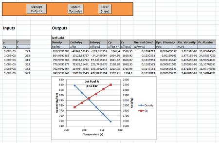
Modelon has successfully completed a research project called AEROTHERMOPROP co-funded by the European Union FP 7 JTI CleanSky. The goal of the project was to provide a media library that covers fluids and property ranges used in aerospace applications compatible with the Modelica Standard Library (MSL).
The media were implemented in Modelon’s related commercial Library, Modelon.Media, which together with an Excel interface were the result of this project. For media such as jet fuels, moist air and air craft hydraulic oils open literature sources were used to implement polynomial based expressions including validity ranges into the Modelica Library.
Further, the project has resulted in a general functionality to export Modelica functions as DLL:s for use in other tools. As a special case in this project, an interface was developed to call Modelica functions from Excel. This solution is now included in JModelica.org (www.jmodelica.org). The Modelica compliance of the compiler was improved to handle the necessary parts of the Modelica library. In Excel, two VBA modules were developed; an Excel add-in with a wrapper function that calls the media functions in the DLL and a template spreadsheet with a GUI for setting up a table of calls to the wrapper function.
This article is provided by Jens Pålsson (Modelon AB) and Hubertus Tummescheit (Modelon AB)
Library News
Optimization 2.0
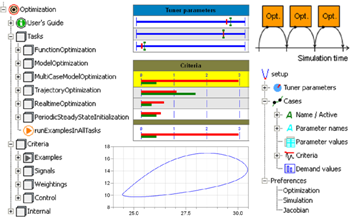
With Dymola 2012 FD01 the new commercial Modelica library Optimization from DLR-RM is available. This library is a completely new design of the Design.Optimization 1.0 library based on research within the EUROSYSLIB project. The library enables the user to define and solve different types of multi-criteria optimization tasks:
- Optimizing parameters of a Modelica function.
- Optimizing parameters of a Modelica model by one or more simulations (e.g. controller parameters).
- Optimizing the input signals of a Modelica model (e.g., the reference trajectory of a controller)
- Optimizing the initial values of a Modelica model to find a periodic solution for the non-linear dynamics (after a given period of time, the simulation result passes again through the start values).
- Optimizing parameters of a Modelica function inside a sampled data system, that is at every sample period in a model an optimization problem is solved during simulation.
Automatic optimization algorithms like “SQP” or “Pattern search” determine optimal solutions of the specified problem. An enlarged library of criteria models allows an easy definition of the multi-criteria formulation. Before starting an optimization run, all information of the optimization setup is saved to a text file, enabling loading and experimentation with the setup in a later session, or reproducing the optimization results. During an optimization run, the actual status of the optimization is shown as diagrams with numeric values in the output window of Dymola. Additionally, this information is also automatically stored in an html-file, for later inspection. Well integrated graphical user interfaces help unexperienced users to conveniently setup their optimization runs. Follow-up optimization runs can be easily setup by using the results of a previous run with a changed definition, like different demand values for the multi-criteria formulation. The library is accompanied by an 80 page tutorial.
This article is provided by Andreas Pfeiffer (DLR-RM)
FlexibleBodies 2.0
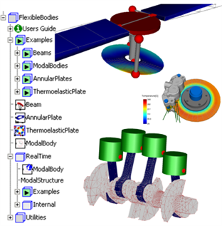
The commercial Modelica library FlexibleBodies from DLR-RM provides Modelica models to represent flexible bodies as beams, annular plates with optional thermo-elastic properties and modal bodies that orginate from a finite-element (FE) model.
The user can define beam-like structures such as rotor blades by simply parametrizing an analytical model of a straight and homogeneous beam considering two-dimensional bending, torsional and lengthening deformations. The analog approach is also applied to model the bending behaviour of annular plates such as an helicopter swash plate. For both model types a graphical user interface allows the definition of a complete set of geometrical and physical properties. The annular plate model in addition supports the definition of so-called arbitrary-Eulerian-Lagrangian (ALE) or slide-on-plate nodes that significantly facilitate e.g. the formulation of sliding contact problems.
The component ModalBody allows to represent flexible bodies of a general geometrical shape. The geometrical and physical properties are defined by an SID (standard input data) file that is usally generated based on the data of an external FE program to which interfaces are available. For the application of ModalBody models in real-time environments the SID-data may be converted into a Modelica package so that external file access is avoided.
The library is distributed by Dassault Systèmes (with Abaqus interface) and Bausch-Gall GmbH (with interfaces to ANSYS, Nastran, I-DEAS, Permas).
This article is provided by Andreas Heckmann (DLR-RM)
PowerTrain 2.1
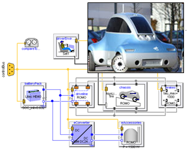
The commercial Modelica library PowerTrain from DLR-RM provides primarily one-dimensional rotational mechanical components for power trains of passenger vehicles. It includes models of frictional clutches, rigid and flexible drive shafts, planetary gears with losses and power train assemblies in various level of detail. Utilizing particular driver models, e.g., the driveability or the performance of fuel consumption tests can be simulated. Due to optional activation of three-dimensional mechanical effects it can be coupled to multi-body models of vehicles enabling e.g. to analyze interactions between power train and vehicle dynamics.
With Dymola 2012 FD01, the new version 2.1 is available. The library has been extended to enable modeling of hybrid electric as well as pure electric power trains especially under real-time conditions (such as the model shown in the figure to the right, which is a simplified version of a detailed model of the DLR electric research vehicle ROboMObil with 10 electrical actuators, which is under development at DLR). In total about 90 new models and blocks have been added, e.g., to provide fast models of battery pack, permanent magnet synchronous machine or DCDC converter.
In particular, the permanent magnet synchronous machine model includes current reference generator, current control and all relevant losses to provide realistic operation conditions (also one concrete example machine is provided that is calibrated and validated with measurements). Formulating the model equations in so-called dq frame assures fast processing during simulation. A new real-time capable energy storage model for Lithium-Ion batteries provides reliable and realistic drive cycle results (also one concrete example is provided, a 40 Ah battery model calibrated and validated with measurements, as used in the DLR electric research vehicle). Within the DCDC converter model the functional model of a buck converter switched mode power supply (SMPS) has been adopted to model the switching and conduction losses. Additionally, the engine models have been extended to enable stop and start during operation.
In order to simplify working with buses, all buses in PowerTrain have been redefined as replaceable expandable empty connectors. Whenever the buses are used concretely, they are redeclared to a connector model where all signal definitions are present. As a result, the actual signal definitions (with units and description texts) are always available at the place where they are used.
This article is provided by Martin Otter (DLR-RM)
Buildings 1.0
| 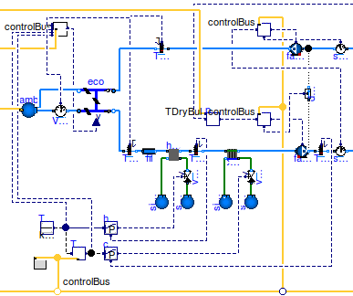 |
The Buildings library is a free open-source library, released under the Modelica License 2, with 300 non-partial models, blocks and functions for building energy and control systems. The library contains models for
- air-based HVAC systems,
- water-based heating systems,
- chilled water plants,
- controls,
- heat transfer among rooms and the outside, and
- multizone airflow, including natural ventilation and contaminant transport.
The primary use of the library is for
- rapid prototyping of new building systems,
- analysis of the operation of existing building systems,
- development, specification, verification and deployment of building controls within a model-based design process, and
- reuse of models during operation for functional testing, for verification of control sequences, for energy-minimizing controls, fault detection and diagnostics.
All development is open-source and we welcome contributions.
For more information, visit http://simulationresearch.lbl.gov/modelica/.
Together with the Buildings library, LBNL also released BuildingsPy, a BSD-licensed Python package that can be used
- to run Modelica simulations using Dymola,
- to process output files that were generated by Dymola or OpenModelica, and
- to run unit tests as part of the library development.
For more information, visit http://simulationresearch.lbl.gov/modelica/buildingspy/.
This article is provided by Michael Wetter (Lawrence Berkeley National Laboratory)
Driveline Library Guided by Leading Transmission Manufacturers
Maplesoft announced the release of MapleSim Driveline Component Library, a collection of components for driveline modeling applications. Built with the involvement of several transmission manufacturers, this MapleSim add-on covers all stages in the powertrain, from the engine to the differential, wheels, and road loads, as well as vehicle dynamics.
MapleSim is a Modelica-based physical modeling and simulation tool built on the foundation of Maplesoft’s world-leading symbolic computation technology. This generates the equations of motion and simplifies them to deliver the most concise representation of the system, resulting in very fast simulations and optimized generated model code for rapid parameter studies as well as real-time execution. Not only that, MapleSim is fully integrated with Maple, so the model equations are available for analysis in this powerful technical problem solving environment. By using MapleSim and Maple together with the MapleSim Driveline Component Library, engineers can mix the best of physical models and empirical data to maximize model fidelity, optimize designs, and improve overall vehicle fuel efficiency.
Entirely developed using Modelica, the library fully supports the Modelica acausal approach to model development in MapleSim, which makes it much easier, and significantly faster, to produce models of any complex transmission configuration from prebuilt components, compared to using traditional signal-flow simulation tools.
The library also provides an option that allows power losses to be readily incorporated into the model, either through external calculations or through the use of empirical look-up tables. For example, energy loss in the powertrain can occur due to tooth meshing, bearing friction, slip, and other factors. This approach allows the user to maximize the fidelity of the model while introducing losses in a manner that best reflects how the loss data was acquired during testing.
“As automotive manufacturers strive to improve fuel efficiency of their vehicles, they’ve focused increasingly on the transmission design as one of the key factors in the overall performance of the powertrain,” says Paul Goossens, Vice President of Application Engineering at Maplesoft. “Engineers are putting a lot of effort into assessing where power is lost, and what can be done to improve overall efficiency. MapleSim and the MapleSim Driveline Component Library greatly reduce the time and effort required for these tasks, and making it much easier for transmission manufacturers to reduce power loss through improved designs. The result will be more efficient vehicles on the roads.”
This article is provided by Tina George (Maplesoft)
TILMedia Suite - Thermo-Physical Fluid Properties
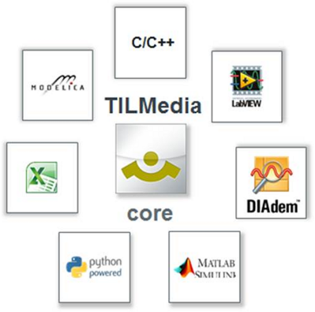
TILMedia Suite provides models for the thermo-physical properties of liquids, refrigerants, water, moist air, gases, and gas mixtures. In TILMedia fluid properties are calculated in four different ways:
- High efficient and precise Real-time implementations by means of arrays of curves
- High efficient and precise table based implementations
- Optimized implementation of scientific standard relations
- Calculation of fluid property data through access to external libraries
TILMedia is optimized to guarantee stable and quick dynamic simulations of systems. The TILMedia Suite consists of several modules for a variety of software programs:
- TILMedia for Modelica (Dymola, SimulationX)
- TILMedia for Matlab and Simulink
- TILMedia for Microsoft Excel
- TILMedia for LabVIEW
- TILMedia for DIAdem
- TILMedia for C/C++
- TILMedia for Python
Further details at www.tlk-thermo.com
This article is provided by Matthias Kwak (TLK-Thermo GmbH)
Vehicle Dynamics Library 1.6
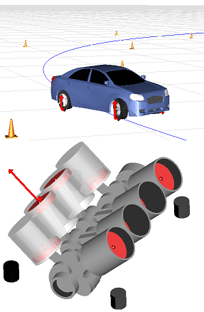
The Vehicle Dynamics Library (VDL) is a Modelica library for modeling, simulation, and analysis of vehicle dynamics for the Dymola environment and will be distributed with Dymola 2013. The upcoming version 1.6 of VDL contains the following main enhancements:
Tuning
VDL supports tuning of vehicle and chassis. This allow for automatic tuning of e.g. camber, toe, cross weight, and ride height. In the library, there are sub-packages Tunables that contains components such as mounts, seats, and links that can be adjusted during simulation. The tunables fit in the standard suspension architectures to facilitate configuration.
Grounds and Roads
Support for explicit contact point calculation so that the contact point can be performed in the ground model instead of the wheel or impact component. This allows for more convenient plug in of external ground and road models.
Drivelines
VDL has been extended with components that allow for powertrain oriented analysis.
- Template-based engine models with cycle resolved characteristics. The new models allow to study the mechanics of the engine, and engine-induced vibrations.
- Engine, transmission and driveline mounts integrated in templates, including different options for mount characteristics.
- Updated transmission models that can handle arbitrary number of gears, with optional gear dependent compliance and backlash for vibration analysis. Automatic transmission with torque converter and compliant lock-up-clutch. Slip-based continuously variable gear.
- KERS, flywheel that can capture and release kinematic energy, based on rotating inertia. The new components are designed to work well together with the rest of the vehicle and typical applications are drivability and take-off. The package has also been extended with dedicated powertrain test scenarios that makes use of test rigs to evaluate engine vibrations, acceleration performance etc. The components are compatible with the PowerTrain library.
DataAccess
A new architecture for data management is introduced available in the Modelon.DataAccess sub-package.
- It allows users to conveniently populate models with data from sources outside the Modelica environments.
- Users can also define own data hierarchies that do not have to match the model hierarchies.
- Data can both be read from and written to the source. This gives a convenient way to link several simulations together.
- The architecture further allows for convenient switching between different sources and source types with single changes.
- DataAccess is especially suited for model export as it allows users to conveniently change model parameters in a consistent way regardless on how the model is exported (C-code, .dll, .exe, FMU, Simulink, etc.).
- DataAccess can be made compatible with any format, by default it comes with support for XML.
This article is provided by Johan Andreasson (Modelon AB)
Vendor News
FMI Toolbox for MATLAB 1.3
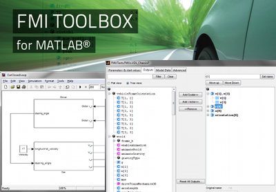
The FMI Toolbox for MATLAB® enables easy to use integration of physical models developed in state of the art modeling tools in the MATLAB®/Simulink environment. The toolbox relies on the open FMI standard and is ideal for control systems development.
The FMI toolbox for MATLAB® links state of the art Modelica-compliant tools, including AMESim, Dymola and SimulationX, to the MATLAB®/Simulink environment.
Key features:- FMI for Model Exchange and FMI for Co-Simulation import into MATLAB® scripts
- FMI for Model Exchange and FMI for Co-Simulation import into Simulink using an FMU blockset
- Set model parameter values from MATLAB® scripts
- Full support for the FMI for Co-Simulation 1.0 standard
- A new, object-oriented API for interacting with FMUs from Matlab scripts
The FMI toolbox has been tested extensively with large FMU’s in industrial contexts, and with FMU’s of different Modelica tools as FMI export capabilities are supported by a growing number of tool vendors.
This article is provided by Johan Åkesson (Modelon)
PyFMI 1.0 and Assimulo 2.1

PyFMI and Assimulo are open source Python packages that make simulation of physical models in Python easy. The packages are based on the open Functional Mock-up Interface (FMI) standard and provide an ideal complement to physical modeling tools by unleashing the power of scripting and numerical processing in Python.
PyFMI and Assimulo are ideal components in Modelica-based tool chains where Python scripting is required. PyFMI provides both an interface to the native FMI functions, and convenient high-level functions for setting model parameters, simulating models and retrieving simulation results. Assimulo provides state of the art simulation capabilities in the Python environment. Several integrators proven in industrial applications, notably IDA and CVODE from the SUNDIALS suite and Hairer’s Radau algorithm, are included. Integration of the sensitivity equations is supported.
PyFMI and Assimulo have been verified to work with FMUs generated by AMESim, Dymola, JModelica.org, OpenModelica, and OPTIMICA Studio.
This article is provided by Johan Åkesson (Modelon)
JModelica.org 1.7

JModelica.org is an extensible Modelica-based open source platform for optimization, simulation and analysis of complex dynamic systems. The main objectives of the project are to create an industrially viable open source Modelica environment, while offering a flexible platform serving as a virtual lab for algorithm development and research. JModelica.org also provides a platform for technology transfer, where industrially relevant problems can inspire new research and where state of the art algorithms can be propagated from academia into industrial use.
Highlights of JModelica.org 1.7:- Improved support for hybrid systems, including friction models and ideal diodes. The improvements include solution of mixed systems of equations, which significantly strengthens the FMI-based simulation capabilities of JModelica.org.
- Support for tearing of equation systems. A graph-theoretical algorithm for computation of tearing variables of equation systems has been implemented, which enables faster simulation times of FMUs.
- Support for external FORTRAN functions. This feature enables use of the LAPACK functions in the ModelicaStandard Library.
- Support for function inlining. In order to simplify models containing functions, typically used in media libraries, inlining of function calls has been implemented. In particular, this feature is useful for simplification of models used for optimization.
- Support for export of Modelica functions in stand-alone DLLs. This feature is useful for exporting Modelica functions, e.g., media functions into stand-alone DLLs (shared object files) for interfacing in third party tools.
- Refactorization of the JModelica.org Python code: a new stand-alone package, PyFMI, is offered. Scripting and simulation of Functional Mock-Up Units (FMUs) in Python is of interest for many FMI-compliant tools. Therefore, the PyFMI package is now provided both as part of JModelica.org and as a stand-alone package.
- A new dynamic optimization algorithm for DAEs implemented in Python based on collocation and CasADi has been implemented. The new algorithm provides significantly improved flexibility and performance.
This article is provided by Johan Åkesson (Modelon)
SimulationX 3.5: Modelica 3.2 and new functionalities
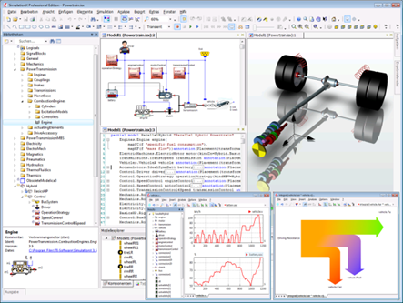
ITI’s new software release 3.5 of SimulationX is based on the language standard “Modelica 3.2”. Several functionalities have been optimized to make modeling and analyzing a breeze:
- Enhanced visualization of MBS models in the 3D view granting a more intuitive interaction and manipulation
- Improved initialization and equilibrium calculations through the new Homotopy Operator reducing complex systems of equations
- Increased real-time capabilities through optional monitoring of minimum limits with fixed-step solver
As a new feature, SimulationX 3.5 introduces the Power Balance analysis. This functionality identifies power and energy flows throughout the entire system showing all elements with their relevant properties, i.e. power source, storage and loss. By taking these results into account together with various work cycles, the new Power Balance feature allows the user to locate potentials for further optimization easily. To make the results more accessible, there are also various ways of visualization, such as pie and bar charts as well as Sankey diagrams.
Another feature in the new release is the Hybrid Powertrain Package, an open Modelica library package for modeling, simulating and evaluating hybrid powertrains. The package includes basic elements and functions, controller models, bus systems and electrical machines as well as gearbox structures and vehicles. Application fields for the Hybrid Powertrain Package are, for example:
- energetic evaluations
- operational strategies
- conceptual comparisons
- vibration analyses
Also new: simulation results can now be accessed more efficiently through the result bar making the parameter management of all models even easier. Calculations, for instance, can be applied to data within one window. Users can also choose between different graphical representations and save their result window layout in XML format.
For more information please contact sales@simulationx.com or visit www.simulationx.com.
This article is provided by Manuela Joseph (ITI GmbH)
Dymola 2012 FD01
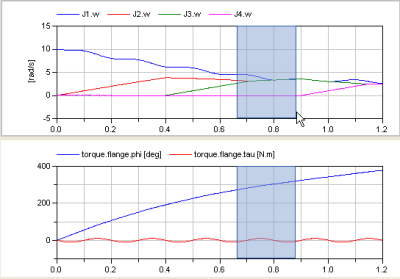 Dymola 2012 FD01 has been released, offering a large number of enhancements.
- Productivity
- Greatly improved plotting capabilities offers easier to use, and more flexible, analysis of simulation results. Dymola supports concurrent zooming and rescaling in subplots, curve highlighting, user-defined text objects in plots, the possibility to keep (“pin”) result files, and there are new tooltips for the plot legends.
The graphical editor has been improved to make common operations faster, for example, with restructured context menus to include only relevant entries for selected objects and by adding commands not before available in those menus.
- Simulation
- Dymola supports more flexible composition of FMI simulation units with support of co-simulation. Better accuracy and faster simulation speed, especially for fluid systems, because of an adaptive Homotopy method. The non-linear solver has been improved to better handle discontinuities at events.
- Openness
- The enhanced Simulink-interface makes distribution of pre-compiled S-functions easier. An OPC server interface to the compiled simulator facilitates integration with process control and training simulators by allowing real-time access to parameters and simulation results.
- Libraries
- General Flexible Bodies exported from FEA can be simulated in Modelica, increasing the scope of models that can be modeled. The Powertrain library has been enhanced with many more components for HEV vehicles. The Optimization library has been redesigned and significantly enhanced.
Error messages for encrypted models have been improved to provide more information pin-pointing the cause of the problem.
This article is provided by Dag Brück (Dassault Systèmes AB, Lund)
OpenModelica 1.8.1 Release
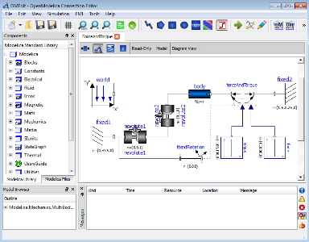
OPENMODELICA IS AN OPEN-SOURCE model-based cyber-physical mathematical modeling, architectural description, and simulation environment intended for industrial and academic usage. Its long-term development is supported by a non-profit organization - the Open Source Modelica Consortium (OSMC), www.openmodelica.org .
The OpenModelica 1.8.1 release includes the following highlights:
- A faster and more stable OMC model compiler. It flattens and simulates more models than the previous 1.8.0 version. Significant speedup of the compiler has been achieved for certain large models.
- Improved support for the Media and Fluid libraries - simulation of about 20% of the MSL 3.1 Media library, and a small subset of the Fluid library.
- Support for operator overloading which is required by Modelica 3.2.
- Significant enhancements in the ModelicaML UML/Modelica profile, supporting requirement-driven modeling, run-time verification, and access to the Modelica Standard Library during modeling.
- Storing OpenModelica documentation as Modelica documentation annotations.
- Enhanced OpenModelica API for detailed access to parts of Modelica models.
- Further improvements in initialization of simulations.
- Faster plotting in OMNotebook.
- Bug fixes to OMEdit - the graphical connection editor.
The development work is organized by the expanding Open Source Modelica Consortium, currently 40 organizations.
For more information, see www.openmodelica.org .
This article is provided by Peter Fritzson (Linköping University)
In this Newsletter, the following registered trademarks are referenced:
ABAQUS® and Dymola® are registered trademarks of Dassault Systèmes.
ANSYS® is a registered trademark of ANSYS Inc.
I-DEAS® is a registered trademark of Siemens Product Lifecycle Management Software Inc.
Maplesoft® and MapleSim® are registered trademarks of Waterloo Maple Inc.
Modelica® is a registered trademark of the Modelica Association.
NASTRAN® is a registered trademark of NASA.
SimulationX®is a registered trademark of ITI GmbH.